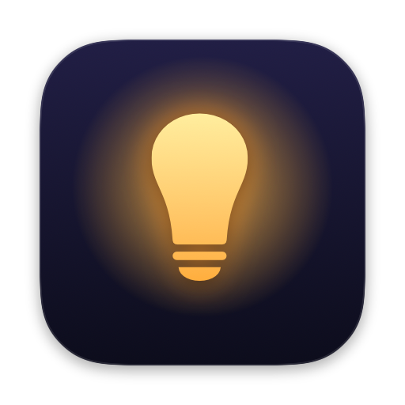
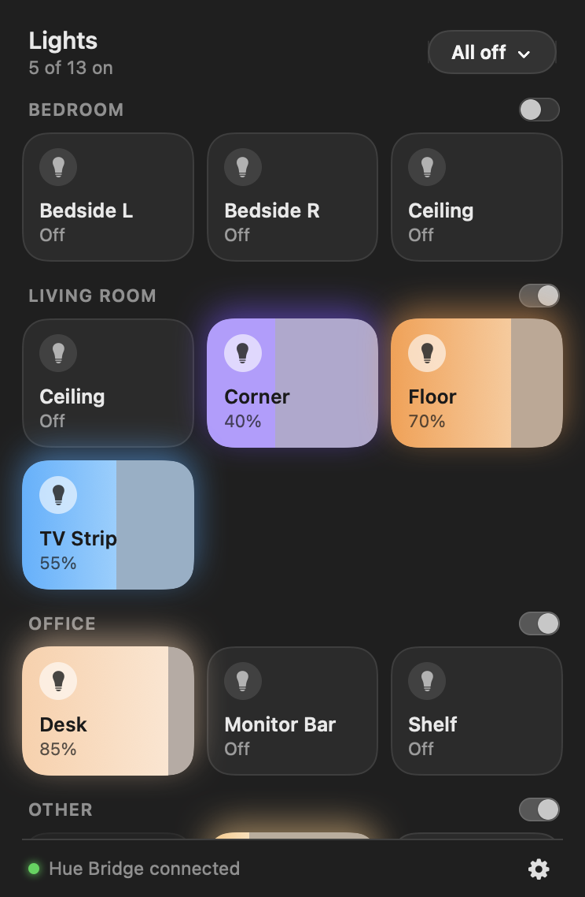
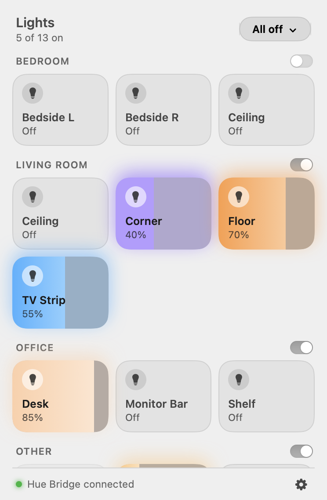
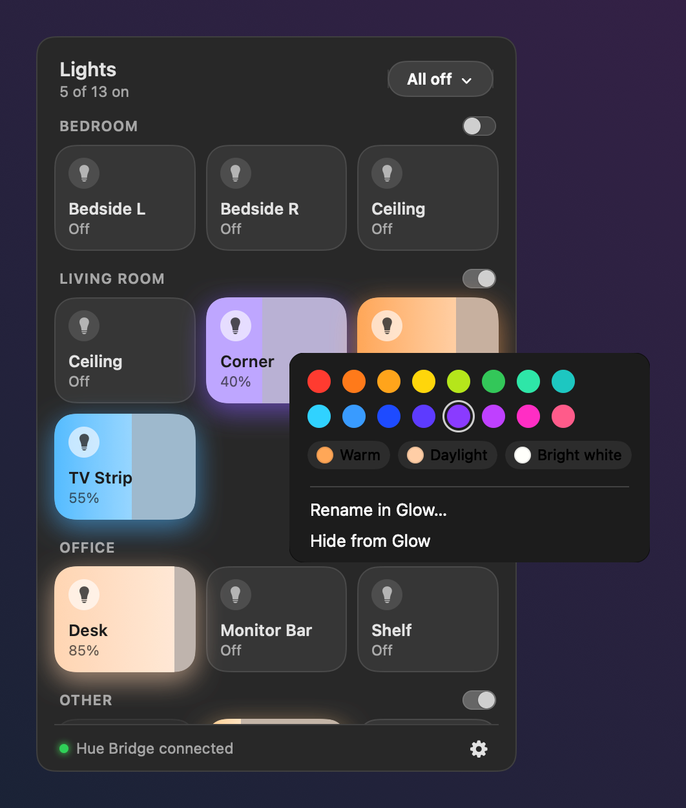
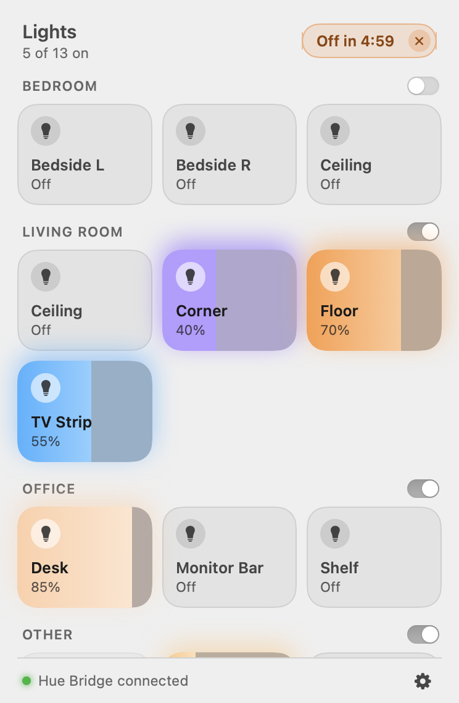
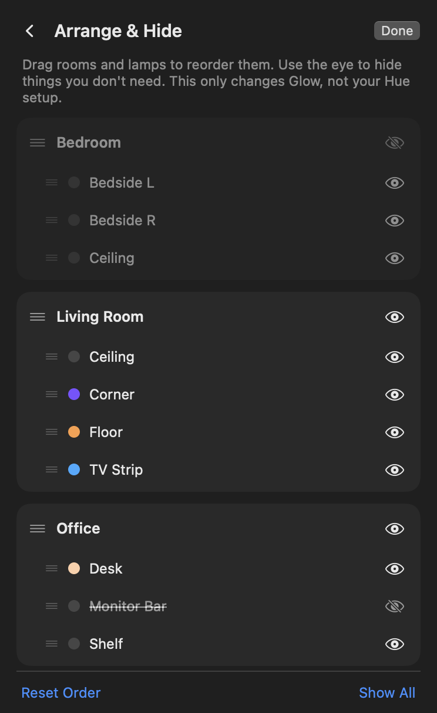

GlowGlow lives in your Mac's menu bar. Click to switch a lamp, drag to dim, right-click for colors. No voice assistant, no phone, no cloud.
Free & open source · macOS 14 or later · Needs a Philips Hue Bridge


Every lamp is a tile glowing in its real color, grouped by your Hue rooms. Click to toggle, drag sideways to set the brightness, flip a room's switch to do the whole room at once.
Right-click a lamp for 16 colors and three whites. Glow only offers what that lamp can actually do. The menu stays open, so you can try a few.

Heading out or going to bed? Turn everything off now, or in 5, 15, 30 or 60 minutes. The timer runs on your Hue Bridge, so it works even when your Mac is asleep.

Drag rooms and lamps into the order you think in, and hide the ones you never touch. It's all inside Glow, so your Hue setup stays exactly as it is.

Talks only to your Hue Bridge on your home network. No account, no cloud, no analytics.
Checks your bridge is a genuine Philips Hue Bridge and pins its certificate. Your key never leaves your network.
Changes from the Hue app, wall switches or voice assistants show up instantly.
Dark and light mode, keyboard control, VoiceOver, Reduce Motion. Runs natively on Apple Silicon and Intel.
Use Home Assistant? You can paste its Hue key instead of pressing the button.
Glow is a free side project, so it isn't signed through Apple's paid developer program. macOS asks you to confirm once via System Settings → Privacy & Security → Open Anyway. The source code is public on GitHub, and you can build it yourself.
That's how Glow reaches your Hue Bridge. It only talks to the bridge (plus Philips' bridge-finder during setup), never to anything else.
Once, during setup. That's how the bridge knows you're allowed to control it. If Home Assistant already controls your lights, you can paste its key instead.
No. Glow needs a Philips Hue Bridge on the same network. Bluetooth-only Hue bulbs aren't supported.
Glow stores the bridge key in a private file only you can read, verifies the bridge is genuine before talking to it, never follows redirects, and doesn't send data anywhere. It went through a security review and attack tests, and the code is open for anyone to check.
A Nest thermostat card showing current and target temperature, and automatic updates. Follow the project on GitHub.